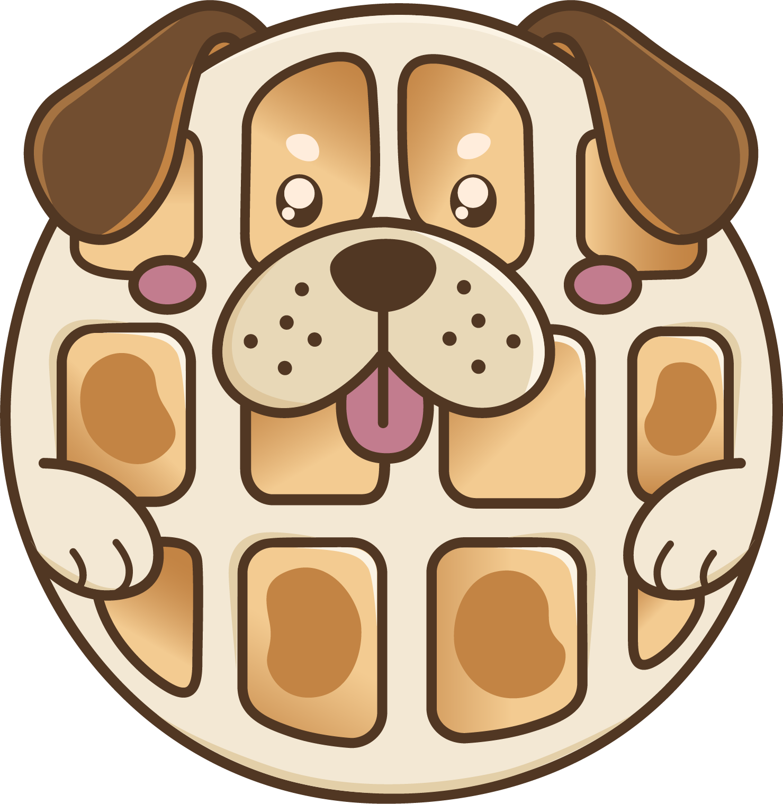

Woof les
A full brand built from a blank page — name, identity and website for a dog treat bakery, designed and developed end-to-end as a demo for client presentation.

A full brand built from a blank page — name, identity and website for a dog treat bakery, designed and developed end-to-end as a demo for client presentation.